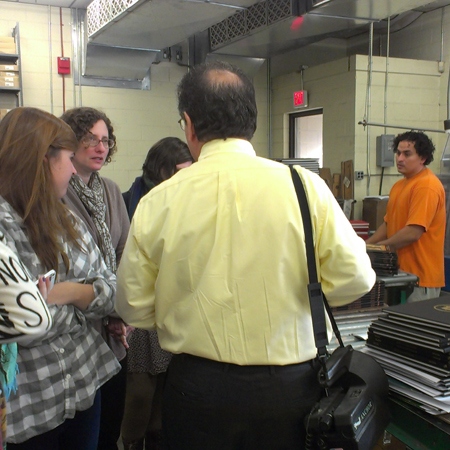
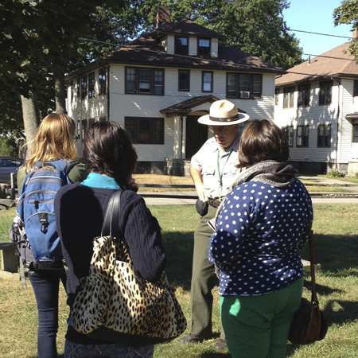

about
 
We provide our design and editorial work at no cost, in exchange for
the opportunity to work on challenging and visually exciting projects and see them through printing and production. Our work is professional quality, and we
partner with the best printers and vendors in the area
to guarantee the best possible results.
We have worked with the Dana Farber Cancer Institute, Boston Medical Center, Partners in Health, the Boston Housing Authority, and the Boston Public Schools, among others. We invite you to explore past projects and read what our partners have to say about their experiences—then consider partnering with us yourself!
Massachusetts College of Art and Design was the country’s first independent public college of art and design, founded in 1873. The college’s professional baccalaureate and graduate programs prepare students to participate in the creative economy as fine artists, designers, and art educators, and to engage in the well being of their society. As a national leader in visual art and design education, the college influences contemporary culture through the accomplishments of its alumni and the creative activities of its faculty and staff. MassArt’s Graphic Design program is well-known for preparing its students to enter the profession at the highest levels.